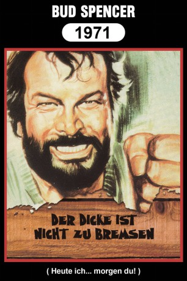

#4382 Der Dicke ist nicht zu bremsen
Alternativ: Today We Kill, Tomorrow We Die! (Englischer Titel)
 
 IMDB-Wertung: 6.2 / 10
IMDB-Wertung: 6.2 / 10  Metascore: 0
Metascore: 0 
Nach fünf Jahren Gefängnis ist Bill Kiowa wieder auf freiem Fuß, nachdem er unschuldig die Strafe für den Mord an seiner Frau verbüßt hat. Bill will Rache und bezahlt vier Killer dafür, die Spur des wahren Mörders, Elfego, aufzunehmen. Der ist vorgewarnt, greift sich Kiowa und seinen Verbündeten O’Bannion und will sie um die Ecke bringen. Doch Kiowas Männer können beide befreien und setzen alles daran, Elfego dingfest zu machen.
Jahr: 1968
Dauer: 94 Minuten
FSK: 16
Land: Studio: Inter-Verleih Film-GesellschaftTonspuren:
Untertitel:
Auflösung: 1080p (1920x1080) Größe: 7536 MB
Genre: Thriller, Western
Regisseur: Tonino Cervi
Drehbuch: Maz Jobrani
Soundtrack:
Darsteller:
 Brett Halsey als Bill Kiowa
Brett Halsey als Bill Kiowa Bud Spencer als O'Bannion
Bud Spencer als O'Bannion- Wayde Preston als Jeff Milton
 William Berger als Francis 'Colt' Moran
William Berger als Francis 'Colt' Moran Tatsuya Nakadai als James Elfego
Tatsuya Nakadai als James Elfego Pietro Torrisi als Bill , uncredited
Pietro Torrisi als Bill , uncredited- Jeff Cameron als Moreno
- Franco Borelli als Bunny Fox
- Dana Ghia als Mirana Kiowa
- Teodoro Corrà als Gun seller
- Aldo Marianecci als Barber
- Michele Borelli als Prison Director
- Umberto Di Grazia als Second in command
- Franco Pechini als Prison director
- Nazzareno Natale als
- Remo Capitani als Publican , uncredited
 Lina Franchi als Bunny Fox's Girlfriend , uncredited
Lina Franchi als Bunny Fox's Girlfriend , uncredited- Giglio Gigli als One of Elfegos Men , uncredited
- Franco Gulà als Old Man in Saloon , uncredited
- Riccardo Petrazzi als Comanchero , uncredited
 Renzo Pevarello als Comanchero , uncredited
Renzo Pevarello als Comanchero , uncredited- Aysanoa Runachagua als Comanchero , uncredited
Datei: X:\Person\Bud Spencer + Terence Hill\Dicke ist nicht zu bremsen, Der (1968, FSK16, 1920x1080).mkv seit 13.09.2016
Festplatte: HD Collection-7+mehr(A-Z)+Person
 Es gibt insgesamt 43 Filme in der Gruppe 'Person\Bud Spencer + Terence Hill'
Es gibt insgesamt 43 Filme in der Gruppe 'Person\Bud Spencer + Terence Hill'